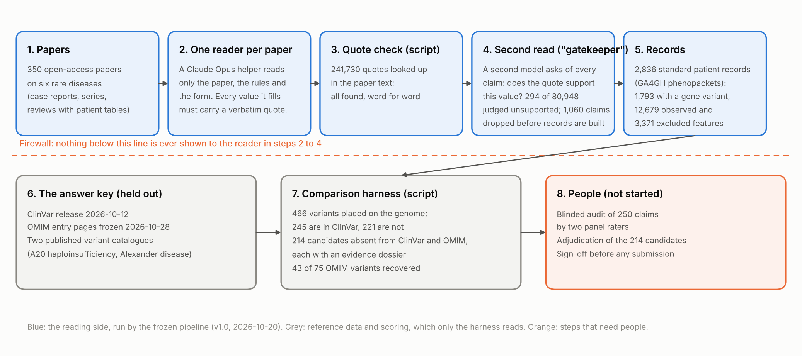
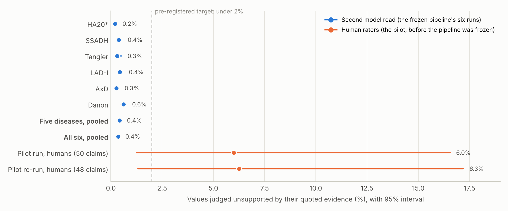
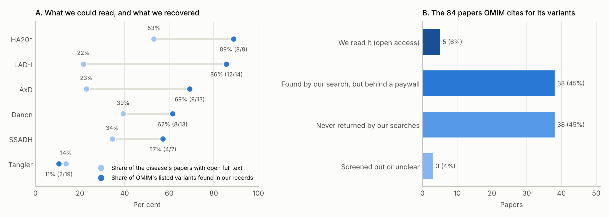
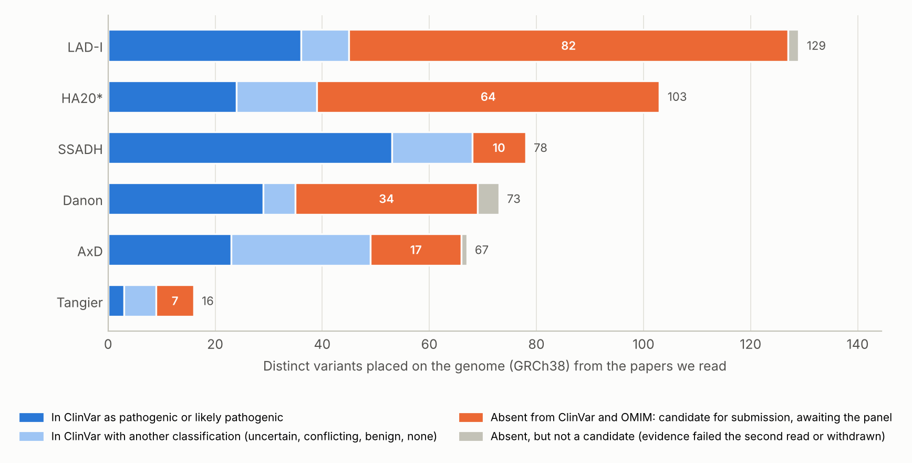

Reading the rare-disease literature with a language model, and checking its work
GP-RareLink turns published case reports on six rare genetic diseases into structured patient records in which every value carries a quote from its source, then checks those records against ClinVar and OMIM, which the model never sees. This page is the orientation for experts joining the project: what we did, what we found, what is still open, and how you can take part.
A project of the Rare Genomics Institute and the Stanford Open Virtual Assistant Lab, led by Dr. Jimmy Lin. Funded by Anthropic's AI for Science program. Shared with invited collaborators; not a publication.
Read the short paper20 min Eight pages written for readers new to the field. HTML · PDF. For what was promised, see the funded proposal.
Flip through the deck10 min Fourteen slides with their narration. View · PowerPoint · PDF
Skim the full report15 min for section 5 Fifty-eight pages with every table and interval; its section 5 lists the gaps and a costed plan to close them. HTML · PDF · supplement
Explore the candidate variants10 min The 214 variants that are published but absent from both databases, with their papers. Table below
Tell us who you are5 min Name, background, which diseases you know, and how you would like to contribute. The form
The problem, and the question
When a child with a rare disease finally gets a genetic diagnosis, the responsible variant is often reported in a single case report and never submitted to a public database. A laboratory testing the next child searches ClinVar and finds nothing. For Alexander disease alone, a 2024 review counts 182 causative variants in 550 published patients, against 76 pathogenic or likely-pathogenic ClinVar records for the gene (release 2026-10-12). The knowledge exists; it is scattered across thousands of papers in prose and tables no database can query, and hand curation has never kept up.
The question. Can a large language model, reading with strict rules, do the first pass: turn case reports into structured records of which variant, in which person, with which clinical features, each value tied to the sentence it came from, at an accuracy we can measure rather than assume? The method is SLIDERS, an evidence-first systematic-review approach from the Stanford OVAL lab, with Claude doing the reading.
1
Quote everything
A value without a verbatim quote is not allowed. A script looks up every quote in the paper. "Not reported" is a valid answer; a paper's silence never becomes a "no".
2
Hold out the answer key
ClinVar and OMIM are never shown to the model. Code that reads papers cannot read them, and a test fails if it could. They are compared afterwards by a separate harness.
3
Decide the rules first
Prompts, forms and the analysis plan were frozen on 2026-10-20 after a one-disease pilot (the plan). Changes since are logged as numbered deviations.
The proposal Anthropic funded
GP-RareLink was proposed to Anthropic's AI for Science program (rare disease program, basic science research track) and approved on 2026-08-31 for the full amount requested. What follows is the proposal as submitted, with where each commitment stands today. The application text is on the dashboard with contact details removed.
$45,000
in Claude usage credits over a six-month project period, the full amount requested; usable across chat, Claude Code, Cowork and Claude Science
2026-08-31
award date; first deposit scheduled for 2026-09-21, which sets the provisional project start
100 of 750+
projects selected from applications to the rare disease program, covering more than 75 named conditions
6 diseases
pilot set spanning four inheritance modes and six organ systems; six substitutes held in reserve
The question, as submitted
Can the SLIDERS method powered by Claude build consolidated variant, phenotype and disease records from published case reports, at an accuracy we can prove, and at a scale that materially closes the gap between the literature and the databases?
The method, as proposed
Extraction with SLIDERS. An LLM-based systematic-review method from the Stanford OVAL lab that assembles evidence tables from documents and keeps full-text excerpts as provenance, with a reconciliation step that joins fragments across papers. Claude Opus reads the case reports and emits GA4GH phenopackets; HGVS is normalized through VariantValidator and records are validated.
ClinVar and OMIM as ground truth, not input. Concordance on gene, HGVS, classification and phenotype is measured against what those databases already assert, scored automatically with no adjudicator hours, and pre-registered before extraction.
Closing the gap. Variants absent from both databases are adjudicated by the panel and offered as ClinVar literature-only submissions and OMIM allelic-variant candidates, each with phenotype evidence and provenance.
Aggregation. Per gene, a genotype-phenotype map with denominators and per-publication provenance.
Ascertainment-bias arm. Literature-derived phenotype frequencies compared with held-out natural-history cohorts, with a memorization probe per disease.
Success metrics, pre-registered, and where they stand
Metric as proposed
Status at 2026-11-09
Concordance with ClinVar and OMIM on gene, normalized HGVS, classification and phenotype, with confidence intervals
measured for ClinVar on six diseases and for OMIM's variants; estimates with intervals, no pass/fail by design
False positives: under 2% of extracted values unsupported by their cited span, audited on 250 claims; abstention when evidence is thin
the sample is drawn and the blinded rating pages are built; no claim has been rated. The machine's own reading is 0.43% on the five confirmatory diseases
Gap closure: variants absent from both databases adjudicated, prepared and accepted for submission
214 candidates listed; adjudication not started
Bias: per-disease deviation from held-out natural-history cohorts, with a memorization probe
memorization probe done on 180 papers for both models (no sign of recall); frequency deviation not started
Efficiency: expert-minutes per accepted record; Claude against an open-weight model under an identical scaffold
open-weight comparison run on two diseases; expert-minutes wait on adjudication; the blinded audit of both models is pending
Deliverables promised, and where they stand
Deliverable as proposed
Status at 2026-11-09
GA4GH phenopackets for the six pilot diseases
2,836 schema-valid phenopackets built, 1,793 with a variant in the gene; the human audit of their values is pending
ClinVar literature-only submissions
214 candidate variants absent from ClinVar and OMIM, each with a dossier; none adjudicated or submitted yet
OMIM allelic-variant candidates
the same 214 candidates, checked against OMIM's allelic variants on 2026-10-28; the submission route to OMIM is still to be settled
Per-gene genotype-phenotype maps
exploratory tests run (GPSEA); Danon disease reproduces the published sex difference; no other term survives correction
Concordance and ascertainment-bias results, published whether favourable or not
ClinVar concordance done for six diseases; OMIM variant half done; the bias arm waits on a person to fill four comparator sheets
Open-source pipeline
the repository holds the pipeline, the harness and every analysis; access on request while the study is under internal review
Timeline, as proposed and as re-planned
The six-month plan as submitted, the dates it implies from the provisional start of 2026-09-21 (decision D-01), and what has happened. The re-plan (D-18) put a one-disease pilot first and froze the pre-registration after it.
Month
Work as proposed
Dates
Where things stand
1
Obtain the literature, OMIM, ClinVar and reference data; replace proxy counts; pre-register; contact Monarch and ClinVar maintainers
2026-09-21 to 2026-10-20
Setup, background literature, pre-registration draft, pilot design (done); outreach drafted, not yet sent
2
Extraction using SLIDERS with Claude
2026-10-21 to 2026-11-20
Pilot on HA20, pre-registration frozen 2026-10-20; extraction, gatekeeper and records done on all six diseases; ClinVar and OMIM concordance done early (we are here)
3
Concordance analysis against ClinVar and OMIM
2026-11-21 to 2026-12-20
Largely done ahead of schedule; OMIM's phenotype half and the ClinVar miss triage remain
4
Adjudication of gap variants
2026-12-21 to 2027-01-20
Dossiers and the adjudication page are ready; the human audit and adjudication need the panel
5
Prepare submissions; bias analysis
2027-01-21 to 2027-02-20
Submission records drafted in pending form; bias arm waits on comparator sheets
6
Write up results for publication and review
2027-02-21 to 2027-03-20
Interim reports exist (versions 2 and 3); the write-up follows the audit
Budget, as requested
Built bottom-up: a core of about $30,000, a stretch of $9,000 to extend to all twelve candidate diseases, and $6,000 contingency; roughly 65% Claude Science and 35% Claude Code. The proposal committed to report actual spend against every line and return anything unused. Spend so far is in the spend section.
Line
Budget line
Requested
1
Extraction across six diseases, incl. re-runs as HGVS and negation handling stabilize
Claude Code: pipeline, VariantValidator integration, dedup tooling, adjudication interface
$6,000
5
Ascertainment-bias arm
$4,000
6
Claude vs open-weight head-to-head
$2,000
7
Stretch: extend to all 12 candidate diseases
$9,000
8
Contingency
$6,000
Total
$45,000
Commitments the proposal made
Literature only: no patient cohort data; RGI's consented cohort is out of scope for this grant.
Provenance on every claim: a real PMID and a verbatim span.
Human sign-off before any submission to ClinVar or OMIM.
Results published whether favourable or not, including the Claude versus open-weight comparison.
No biosecurity-relevant work; the award does not exempt the project from Anthropic's Usage Policy.
Acknowledge Anthropic's AI for Science program in any publication that used the credits.
Figures in the proposal that later checks corrected
The application was written from secondary sources. These are the figures we no longer repeat as written; the corrections are logged as decision D-14 and in the project's context file.
As submitted
Correction
Tangier disease: about 200 published patients
sources support fewer than 100 to about 144 (decision D-14)
Danon disease: more than 100 published families
about 100 families and at least 146 molecularly confirmed patients (D-14)
Six diseases absent from phenopacket-store's 408 cohorts
the 408 has no published source; the store had 731 gene folders at its 2026-10-07 commit, and the six diseases are absent from it (D-14)
LAD-I: genotypes for 184 patients published but never structured
probably the 184 patients without a reported genotype, which extraction cannot recover (D-14)
ClinVar counts from MyVariant.info and ClinVar Miner (for example 72 pathogenic or likely-pathogenic GFAP records)
replaced by direct counts from one dated release (2026-10-12): GFAP 76; all six genes in the table above
OMIM allelic-variant counts given as proxies (for example about 12 for GFAP)
read from the gene entry pages frozen on 2026-10-28: 75 titled for the six diseases in all
How the pipeline works

The reading side (blue) never sees the answer key (grey). Steps that need people (orange) have not started. Numbers are from the six-disease run.
One model reader per paper fills a structured form with quotes. A script checks every quote against the paper text. A second model pass, the gatekeeper, re-reads each value against its quote and drops the ones it cannot support. The output is one standard record per individual, a GA4GH phenopacket, with clinical features as HPO terms in three states (observed, excluded, not reported), the variant written in HGVS on a named transcript and placed on the genome, and the paper and quote behind every value. A separate harness then compares the records with a dated ClinVar release, OMIM's frozen entry pages and two published catalogues, and lists the variants the databases are missing.
Where things stand
350
open-access papers read, six diseases
2,836
individual records, every value with a quote
241,730
quotes checked against the paper text; all found word for word
466
distinct variants placed on the genome
214
in neither ClinVar nor OMIM, awaiting adjudication
43 of 75
OMIM-listed variants recovered (57%)
What has not happened yet, and needs people
The pre-registered human audit of 250 claims is drawn and its blinded rating pages are built; no claim has been rated.
None of the 214 candidate variants has been adjudicated.
The ascertainment-bias arm has no numbers until a person fills four comparator sheets.
OMIM's clinical synopses (its phenotype half) have not been assessed.
Only open-access papers were read (14% to 53% of each disease's corpus); a decision on wider access is pending.
The six diseases
Chosen to span inheritance modes and organ systems, all absent from the main public collection of phenopackets. A20 haploinsufficiency (HA20) was used to develop and pilot the pipeline, so its numbers are flagged and the other five form the confirmatory set. Only open-access papers were read.
Disease
Gene
Inheritance
Papers read (open-access share)
Individuals
With a variant in the gene
Variants placed on the genome
Absent from ClinVar and OMIM
OMIM variants recovered
Values judged unsupported
ClinVar P/LP records (gene)
A20 haploinsufficiency (HA20)*
TNFAIP3
AD
85 (53%)
769
558
103
64
8 of 9
0.20%
99
SSADH deficiency (SSADH)
ALDH5A1
AR
40 (35%)
363
243
78
10
4 of 7
0.38%
152
Tangier disease (Tangier)
ABCA1
AR
31 (14%)
235
65
16
7
2 of 19
0.31%
85
Leukocyte adhesion deficiency I (LAD-I)
ITGB2
AR
42 (22%)
508
328
129
82
12 of 14
0.43%
87
Alexander disease (AxD)
GFAP
AD / de novo
69 (23%)
456
318
67
17
9 of 13
0.27%
76
Danon disease (Danon)
LAMP2
X-linked dominant
83 (39%)
505
281
73
34
8 of 13
0.61%
154
* Development disease. "Placed on the genome" = written unambiguously on GRCh38, which is what makes a variant comparable with ClinVar. "Values judged unsupported" = the second model read's verdicts, not a human audit. ClinVar counts are single-gene GRCh38 records in the release of 2026-10-12; OMIM counts come from the gene entry pages frozen on 2026-10-28.
Findings so far
1. The receipts hold, but the decisive check has not happened
Every one of 241,730 quoted values was found verbatim in its paper. A second model read judged 0.43% of values unsupported on the five confirmatory diseases (0.36% with the development disease). But the only human-rated figures, from the pilot before the pipeline was frozen, were 6.0% and 6.3%. The pre-registered test is a blinded audit of 250 claims by two panel members; it is built, and nobody has rated a claim. Until then the machine's rate is a filter's reading, not an accuracy.

Blue: the gatekeeper's verdicts per disease run. Orange: two human audits of the pilot's output. Dashed line: the 2% target.
2. We find what we can read
Against OMIM's listed variants we recovered 43 of 75 (57%), from nearly 90% where the literature is open to 11% for Tangier disease, whose variants come from closed papers. Of the 84 papers OMIM cites as sources for those variants, we could read 5; 38 are behind paywalls and 38 were never returned by our searches, mostly pre-1990 papers under earlier names for the disease. Where the source paper was read, the variant was in our records 8 times out of 14. Access, not reading, sets the ceiling; the completeness figures and the candidate list are lower bounds.

A: the share of each disease's papers with open full text beside the share of OMIM's listed variants recovered. B: where OMIM's source papers stand in our corpus.
3. Hundreds of published variants are in neither database
The papers yielded 466 distinct variants placed on the genome. 245 are in ClinVar, 168 of them classified pathogenic or likely pathogenic. 221 are absent from ClinVar; after dropping those whose only evidence failed the second read, checking OMIM, and withdrawing one normalization error of our own, 214 candidates remain, each with a dossier of every paper, quote and individual. 53 more sit in ClinVar as uncertain or conflicting while the papers call them pathogenic. The full list is below. Nothing is submitted without adjudication.

Each bar: one disease's genome-placed variants. Orange: the candidates.
4. A cheaper open-weight model finds the same variants and loses the receipts
On identical papers, prompts, forms and scoring, DeepSeek-V4.1-Flash found the same variants 89% to 95% of the time at about 1/15 of the cost per paper and 7 times the wall-clock. It left 3.0% to 3.6% of its values with no quote at all, which the rules forbid, and the second read rejected 6.14% to 8.64% of its claims against Claude's 0.20% to 0.38%. The judge is itself Claude, so this is not neutral until the planned blinded human audit of both outputs.
Disease
Papers
Values with no quote (Claude / open)
Judged unsupported (Claude / open)
Variants found by both (shared of union)
Median cost per paper (Claude est. / open)
Median minutes per paper
HA20
85
0% / 3.6%
0.20% / 8.64%
261 of 294 (89%)
$1.08 / $0.07
3 / 21
SSADH
40
0% / 3.0%
0.38% / 6.14%
157 of 166 (95%)
$1.19 / $0.07
3 / 19
5. Repeat runs agree, and the model did not recall the papers
Running a tenth of the papers a second time (38 papers) gave the same checklist answers 97% to 100% of the time and the same variants 83% to 100% of the time; where the runs differed it was mostly over how many individuals a cohort paper describes. A memorization probe on 180 papers, stratified around the model's training cutoff, found no sign that either model recalled the papers from training: in the 10 papers published after the cutoff, neither produced a specific recall or a correct variant.
How to read these numbers
No accuracy claim is made for the frozen pipeline. Every error rate above is a model's reading of a model's output; the human figures are from the pilot.
HA20 developed the pipeline; quote the five-disease figures.
Open access only: completeness, recall and the gap count are measured on what could be read.
OMIM is a sample. Recall against its listed variants is meaningful; "precision against OMIM" is not.
Costs are estimates from usage readings, not invoices.
The pipeline's author (Claude Code) also generated the reports from its outputs. The numbers are reproducible from the committed files; the framing is not independent of the system it describes, which is one more reason the human audit decides.
What we need from you
The expensive, decisive parts of this study are the ones only people can do. Each role below unlocks a pre-registered result or a deliverable. Everything is published literature; there is no patient data.
Role
What you would do
Effort
What it unlocks
Audit rater
Rate 250 extracted values against their quoted evidence on a blinded web page; two raters and a tie-breaker
10 to 15 hours per rater
The primary outcome: the first true accuracy figure for the frozen pipeline
Adjudicator
Review the 214 candidate variants from their dossiers and decide whether the evidence supports a submission
10 to 15 minutes per candidate
ClinVar literature-only submissions and OMIM allelic-variant candidates
Cohort reader
Fill a comparator sheet of clinical-feature frequencies from a natural-history cohort paper, without looking at our records
1 to 2 hours per sheet
The ascertainment-bias arm
Methods or domain reviewer
Read the short paper or the full report and tell us what is wrong, missing or unclear, from your field's point of view
1 to 3 hours
A better study before anything is submitted
Tell us who you are and how you would like to contribute
Five minutes: name, background, which of the six diseases you know, the roles that suit you, your availability over the next eight weeks, and what you make of the results so far.
The input form is being set up. Until it is live, please reply to the message that brought you here.
Candidate variants absent from ClinVar and OMIM
214 variants placed on the genome from the papers we read, with values the second read supported, that are absent from ClinVar in two successive releases and from OMIM's allelic variants. None has been adjudicated; some will prove to be notation differences, the same patient reported twice, or carriers rather than cases, which is what the dossiers and the panel are for. PubMed links open the source papers. Download as CSV or JSON.
ID
Disease
Gene
Variant (normalized)
Predicted protein
As written in the papers
Papers
Individuals
Authors' class
PubMed
Spend so far
About $1,861 of the $45,000 award by this session's own usage readings to 2026-10-24. These are estimates, not billing figures. A separate exploratory pilot in another session cost about $317; the open-weight runs cost $20 outside the award. The expensive parts, human rating and adjudication, have not happened.
Line
Budget line
Requested
Spent (estimate)
1
Extraction across six diseases, incl. re-runs as HGVS and negation handling stabilize
The figures on this page, machine-readable. Spend by line in spend.json.
The project repository is https://github.com/cjimmylin/gp-rarelink (access on request). Every number on this page is produced by scripts there from the committed result files, at commit 8d27d5d; this page regenerates with uv run python -m analysis.dashboard.build_site.
Glossary
ClinVar
A public database (NIH) where laboratories and researchers deposit genetic variants with a classification such as pathogenic or uncertain significance. Half of our answer key, and the target for new submissions.
OMIM
A curated encyclopedia of genes and genetic diseases that lists selected example variants for each disease. The other half of the answer key; a sample, not a catalogue.
HPO
The Human Phenotype Ontology, a standard vocabulary of clinical features. Our records use it in three states: observed, excluded, not reported.
HGVS
The standard notation for a variant, such as c.1097_1098del, always relative to a named transcript.
GRCh38
The current human reference genome. A variant "placed on the genome" has an unambiguous position on it, which is what makes it comparable with ClinVar.
Phenopacket
A GA4GH standard file describing one individual: clinical features, variants, diagnosis, with sources. The pipeline's output, one per individual.
Gatekeeper
Our name for a second model pass that re-reads every extracted value against its quoted evidence and drops what it cannot support. A filter, not a measure of accuracy.
Pre-registration
Writing down the analysis plan, metrics and thresholds before running the study, and freezing them. Changes afterwards are logged as numbered deviations.
Candidate (gap candidate)
A genome-placed variant with gatekeeper-supported evidence in the papers that is absent from ClinVar and from OMIM's allelic variants. A candidate for submission, after expert adjudication.
Development disease
A20 haploinsufficiency (HA20), on which the pipeline was built and piloted. Its results are flagged; the other five diseases form the confirmatory set.